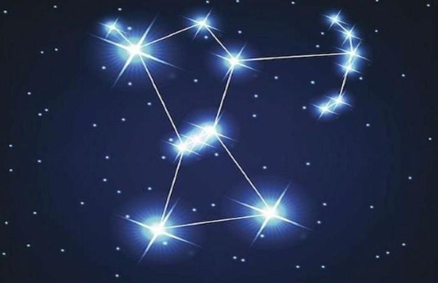

Оріон

Сузір’я Оріон
Сузір’я Оріон відноситься до найяскравіших і популярних сузір’їв небесного екватора. Ще в давні часи людям було відомо про нього під іншою назвою – Мисливець. Його зображували мисливцем, що переслідує з двома собаками Зайця або Тельця, що стоїть попереду.
В сузір’я входять дві найяскравіші зірки – Бетельгейзе і Ригель, туманність Оріона, Туманність Кінська голова, скупчення Трапеції, Пояс Оріона.
Легенда про сузір’ї Оріон
Оріон був прекрасним мисливцем, сином дочки Міноса Евріал і бога морів Посейдона. Давньогрецький поет Гомер в творі «Одіссеї» описав його як незламного і високого чоловіка. Згідно з першою легендою син Посейдона закохався в 7 сестер Плейони і Атласу і став їх переслідувати. Бог Зевс заховав дівчат в сузір’ї Тельця на небі. Сьогодні здається, що він продовжує стежити за сестрами.
Друга легенда говорить, що Оріон закохався в дочку короля Енопола – Меропу. Але вона не відповідала чоловікові взаємністю. Мисливець одного разу напився і почав чіплятися до дівчини. Король Енопол засліпив Ореона і вигнав зі своїх володінь. Бог Гефест зглянувся над сліпим і попросив свого помічника замінить мисливцеві очі. І після цього він вознісся на небо.
Є ще одна історія, пов’язана з Оріоном. Одного разу мисливець похвалився Артеміді, що здатний вбити будь-яку земну істоту. І богиня відправила до нього скорпіона, який вбив його смертельною отрутою. Оріон і скорпіон потрапили на небосхил. Мисливець на заході ніби заходить за горизонт, немов тікаючи від скорпіона.
Як давно відомо про сузір’я Оріона?
Найцікавіше у сузір’ї Оріона — те, що воно було відоме людям ще в кам’яну добу. Принаймні зображення його зір було викарбувано на кістці мамонта, знайденій у Німеччині 1979 року. Її вік був оцінений фахівцями у 32–38 тис. років.
У текстах стародавніх цивілізацій Оріон був присутній від самого початку. Стародавні єгиптяни вважали його втіленням бога вічного життя Осіріса і шанували як царя зір. Стародавні вавілоняни називали його «Небесним пастухом».
Сузір’я Оріона згадується навіть у Біблії. Там воно відоме як Кесіль. Фахівці пов’язують цю назву з дев’ятим місяцем єврейського календаря.
Основні зірки в сузір’ї Ореон:
- Ригель. Це блакитний надгігант, слабкий і нерегулярно змінний.
- Ригель А. Це подвійна спектроскопічна зірка. Через деякий час вона перетвориться в червоний надгігант.
- Бетельгейзе. Це – червоний надгігант, змінний і напіврегулярний. Також Бетельгейзе найяскравіша зірка в сузір’ї Оріон. Через мільйони років вона вибухне як наднова. Вчені стверджують, що після цієї події її можна буде побачити навіть вдень, так як сяйво зірки буде яскравіше за Місяця. Вона буде найяскравішою надновою зіркою.
- Беллатрикс. Інша назва зірок в сузір’ї Оріона – «Зірка Амазонки». Це гарячий біло-блакитний гігант. Беллатрикс є найгарячішою зіркою, яку видно неозброєним оком. Через пару мільйонів років вона перетвориться в оранжевого гіганта і стане потужним білим карликом.
- Мінтака. Це змінна зірка. Завершить свою життєдіяльність вибухом і появою наднової. У сузір’ї Оріона Мінтака є найслабшою за яскравістю зіркою.
- Альнилам. Це яскраво-блакитний, гарячий надгігант. Знаходиться в самому центрі Оріона. На даний момент зірка втрачає свою масу, тому незабаром Альнилам трансформується в червоного надгіганта.
- Альнитак. Це зоряна багаторазова система. Знаходиться в східній стороні сузір’я.
- Саїф. Це блакитний надгігант і південно-східна зірка сузір’я Оріон. Як і інші зірки, вона трансформується з часом в наднову.
- Наїр Аль Саїф. Це спектроскопічна масивна подвійна зірка. Вона являє собою сильне джерело рентгенівського випромінювання.
- Лямбда Оріона. Це блакитний гігант, у якого є супутник у вигляді біло-блакитного карлика.